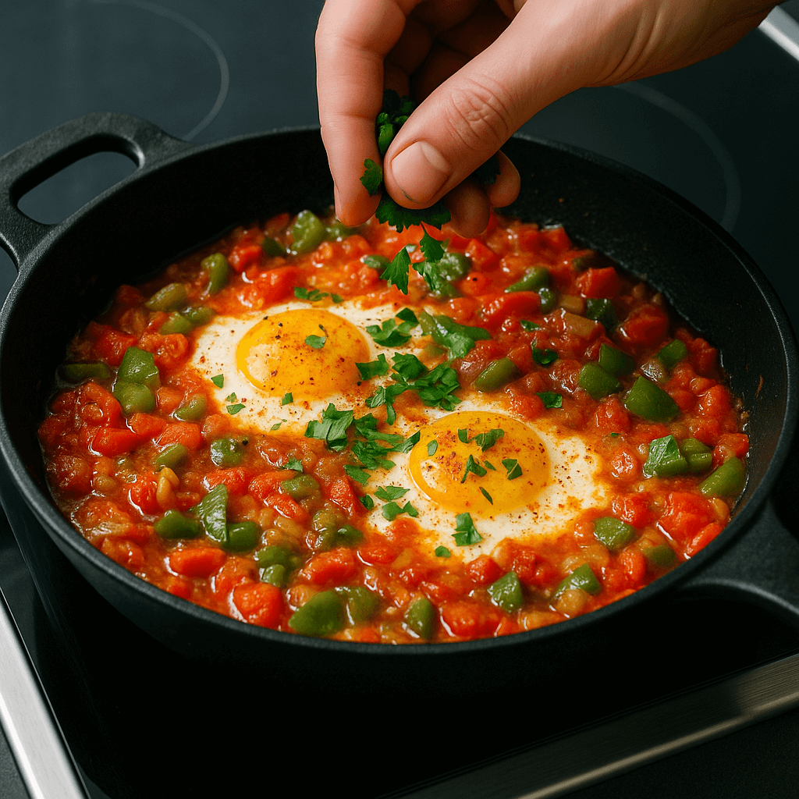

Menemen Tarifi 🍅🧅
Süre: Hazırlık 5 dk + Pişirme 12-15 dk = Toplam 20 dk
- Malzemeler:
- 4 adet yumurta
- 3 adet domates (rendelenmiş/kuşbaşı)
- 2 adet yeşil biber (doğranmış)
- 1 küçük soğan (isteğe bağlı)
- 2 yemek kaşığı zeytinyağı
- Tuz, karabiber, pul biber

Yapılışı:
- Tavayı ısıtıp yağı ekleyin; (kullanacaksanız) soğanı 2–3 dk soteleyin.
- Biberleri ekleyin, yumuşayana kadar 2–3 dk pişirin.
- Domatesi ve tuzu ekleyin; suyunu salıp hafif çekene kadar 5–6 dk pişirin.
- Yumurtaları ayrı bir kasede hafifçe çırpın, tavaya dökün.
- Karıştırarak 2–3 dk pişirin (kıvamı size kalmış). Karabiber/pul biber serpip servis edin.
Afiyet olsun! 🍽️